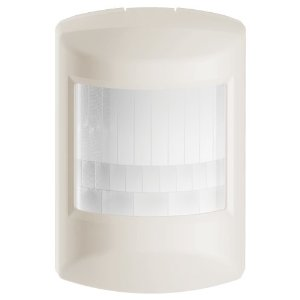

To add device to VENUS, below actions are required:
- Press “Add button” (button ‘+’) in app
- Reset device: remove battery for at least 5 seconds then re-install
- Wait for VENUS scan & detect this device and inform in app
- Reset device again to complete adding device to VENUS
Back-side of Schlage motion sensor is similar to Ecolink motion sensor
To add associated device(s) to this sensor, below action is required:
- Add z-wave notified-devices (which will be associated to this sensor) to VENUS
- Select Associate button and then select notified-device(s) to add
- Wake-up this sensor: press Program button by a paper clip
- If successful, pop-up notification displays in VENUS app
To remove associated device(s) from this sensor, below action is required:
- Select Associate button and then select notified-device(s) to remove
- Wake-up this sensor: press Program button by a paper clip
- If successful, pop-up notification displays in VENUS app
1. Signal trigger device (Trigger to associated devices)
- ON (default): When detecting motion, the associated devices are triggered as ON.
And when motion ends, the associated devices are triggered as OFF.
- OFF: When detecting motion, the associated devices are triggered as ON.
And when motion ends, no trigger to associated device.